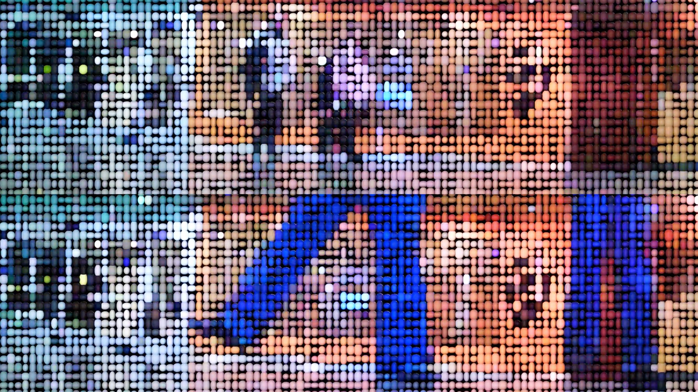
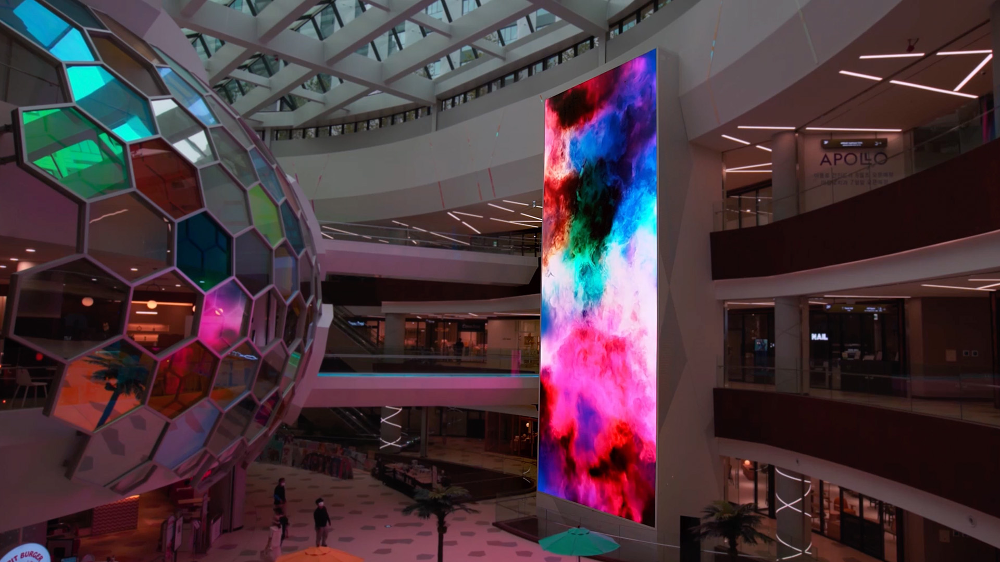
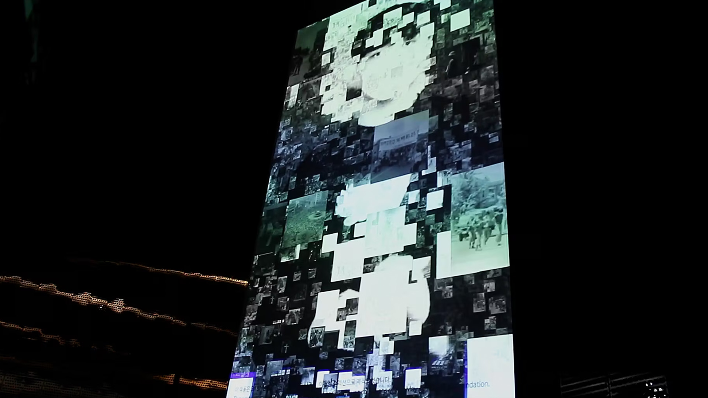
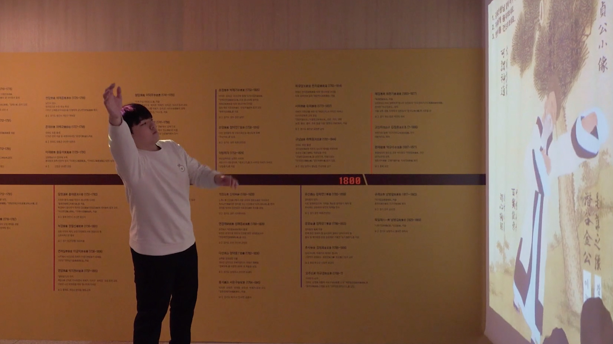
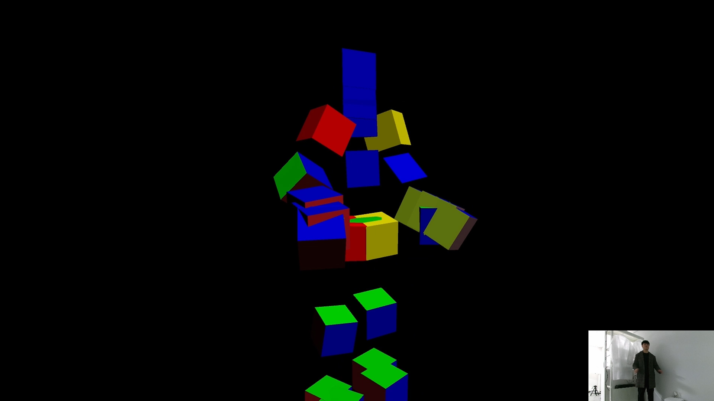
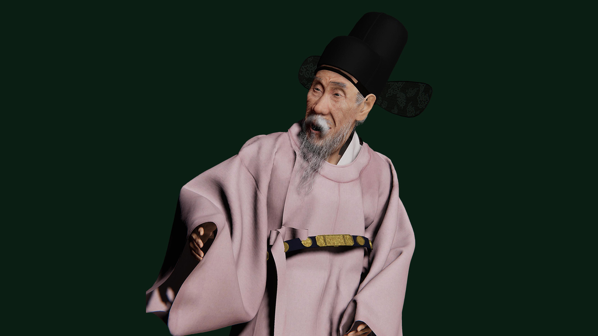
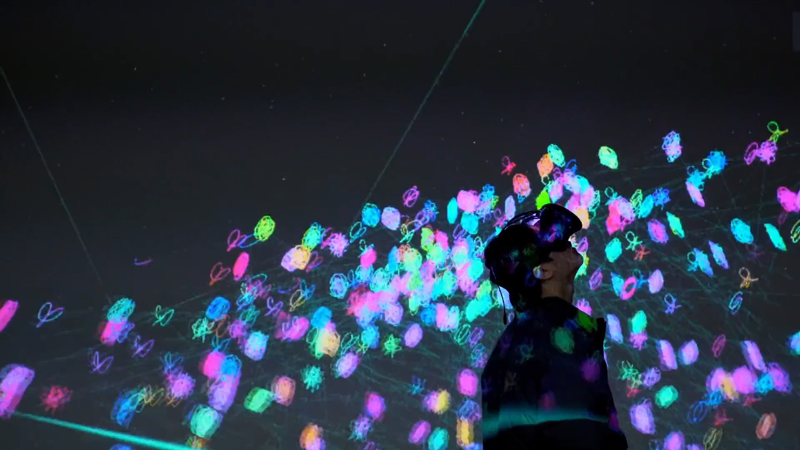
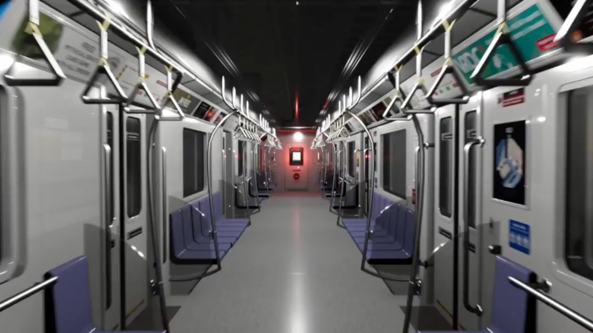
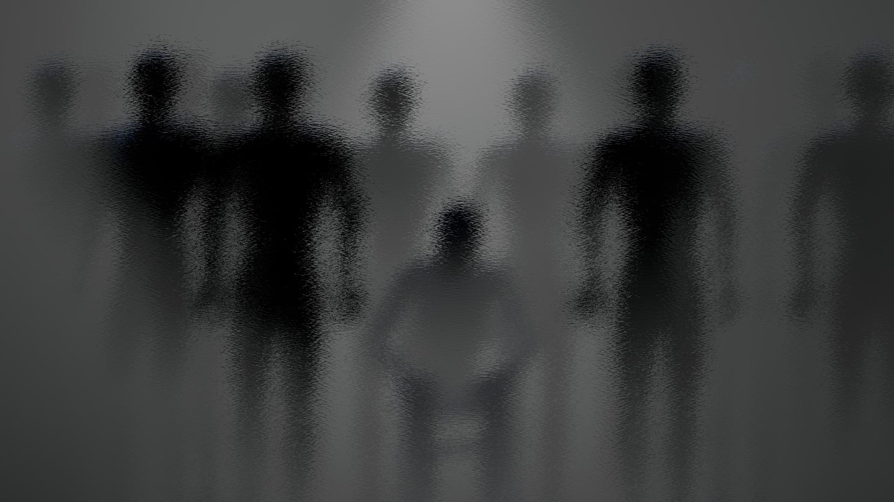
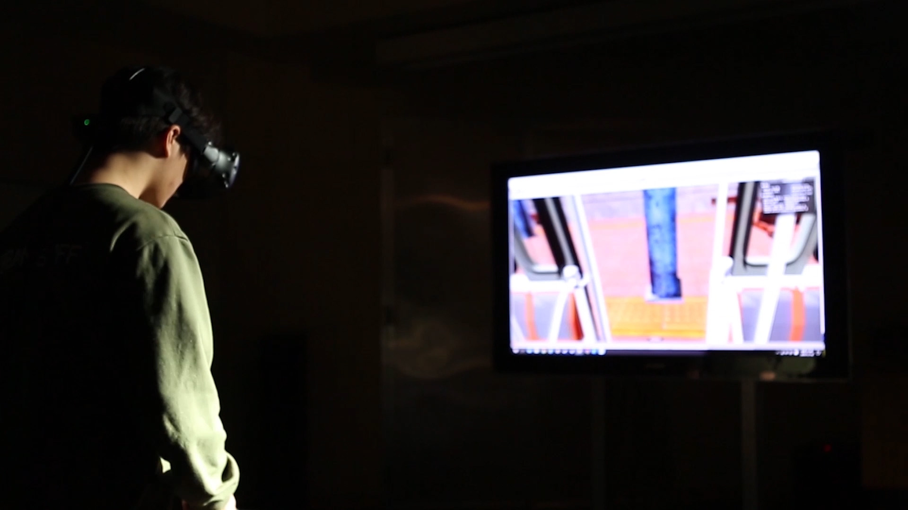

01
01Algorithm of Flowers and Grammar of Waves
Waves and flowers shaped through particles, shaders, and repetition.
VFX Graph · Shaders · Unity
Unity developer / media artist / researcher
I design and develop Unity systems across graphics, sensing, digital humans, and VR.
15 works
01Waves and flowers shaped through particles, shaders, and repetition.
VFX Graph · Shaders · Unity

02
03Shopping-mall noise drives a changing visual landscape.
Live audio · Visual mapping · Unity
 04
04Cloud shaders and raymarched droplets for an artist-led game.
HLSL · Raymarching · Metaballs

05A visitor’s body carries images of collective memory.
Azure Kinect · Timeline · Live compositing
 06
06AI style transfer turns visitors’ portraits into another era.
Barracuda · Style transfer · OpenCV

07Body tracking brings a historical character into shared movement.
Kinect v2 · Body mapping · Character animation

08
09A historical portrait becomes a performing digital human.
Unity HDRP · Digital human · Animation integration
 10
10Conversation, hand sensing, and servos stage an encounter with AI.
LLM dialogue · Arduino servos · Hand sensing
 11
11A digital likeness listens, speaks, and performs in real time.
Spoken dialogue · LLM · Digital human

12The periodic table becomes a navigable virtual universe.
VR worldbuilding · Harmonograph · Data translation

13
14VR role reversal examines control and narcissistic relationships.
Hand tracking · Unity XR · Role reversal

15Paint a virtual subway without marking a physical space.
Particles · RenderTexture · VR painting
Try a project name, a technique such as Kinect, or reset the filters.